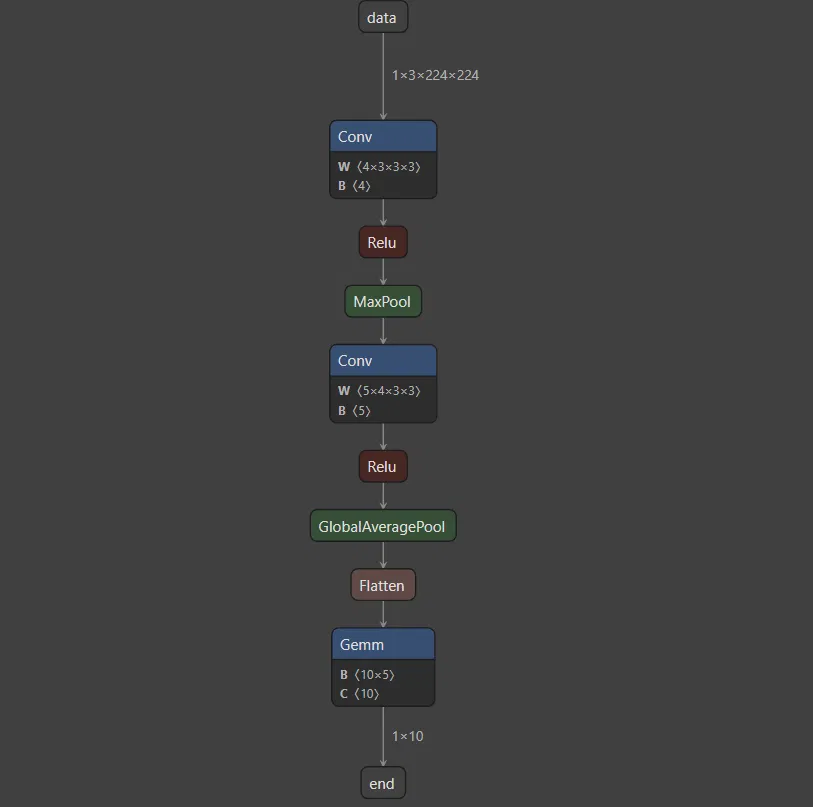

# 前言
本篇通过代码介绍 NCNN 的模型转换过程。模型转换过程逻辑简单，所以本篇文章只对关键节点进行介绍。NCNN 工程地址。
作为初学者，错误在所难免，还望不吝赐教。
# 介绍
NCNN 是由 腾讯优图实验室 开发的 开源神经网络推理框架，专注于为 移动端和嵌入式设备 提供高效、轻量的深度学习模型部署解决方案。自 2017 年开源（基于 BSD 3-Clause 协议）以来，因其高性能、低功耗和跨平台特性，成为移动端 AI 推理的主流框架之一。
# 使用
ncnn 编译部署方法，网络上很多，也可以参考工程中的 ：docs/how-to-build/how-to-build.md。编译时出现 Protoc 报错，可以参考工程中的 ：docs/how-to-use-and-FAQ/FAQ-ncnn-protobuf-problem.zh.md
编译完成之后的使用命令，以 onnx 模型为例：
# onnx 模型转换为 ncnn 模型 | |
./build/tools/onnx/onnx2ncnn /home/user/yourpath/model.onnx /home/user/yourpath/model_ncnn.param /home/user/yourpath/model_ncnn.bin | |
# 如果量化的话，需要构建一个校准数据集列表 imagelist.txt linux 命令可方便的构建这个列表 | |
find yourpath/dataset/img/ -type f > imagelist.txt | |
# 量化步骤 1：生成 table 文件。tabel 文件记录根据校准数据集得到的量化因子 | |
./build/tools/quantize/ncnn2table /home/user/yourpath/model_ncnn.param /home/user/yourpath/model_ncnn.bin /home/user/yourpath/dataset/imagelist.txt /home/user/yourpath/model_ncnn.table mean=[0,0,0] norm=[1,1,1] shape=[224,224,3] thread=8 method=kl pixel=RGB | |
# 量化步骤 2：完成参数量化。根据 table 中的量化因子，将权重和参数量化为 int8 | |
./build/tools/quantize/ncnn2int8 /home/user/yourpath/model_ncnn.param /home/user/yourpath/model_ncnn.bin /home/user/yourpath/model_ncnn_int8.param /home/user/yourpath/model_ncnn_int8.bin /home/user/yourpath/model_ncnn.table | |
# 执行。 执行例子在 example 文件夹下，可以参考这些运行例子自己写一个，调用编译好的模型，执行。 | |
./build/examples/simple_net /home/user/yourpath/dataset/img/img.jpg |
# 模型
构建模型的代码：
from torch import nn | |
import torch | |
import numpy as np | |
class modeltest(nn.Module): | |
def __init__(self, inp_c = 3, istrain=False): | |
super(modeltest, self).__init__() | |
self.conv1 = nn.Conv2d(in_channels=inp_c, out_channels=4, kernel_size=(3, 3), groups=1, stride=(1, 1), padding=0, bias=False) | |
self.bn1 = nn.BatchNorm2d(4) | |
self.relu1 = nn.ReLU() | |
self.maxpool = nn.MaxPool2d(kernel_size=3, stride=2, padding=1) | |
self.conv2 = nn.Conv2d(in_channels=4, out_channels=5, kernel_size=(3, 3), groups=1, stride=(1, 1), padding=0, bias=False) | |
self.bn2 = nn.BatchNorm2d(5) | |
self.relu2 = nn.ReLU() | |
self.avgpool = nn.AdaptiveAvgPool2d((1, 1)) | |
self.fc = nn.Linear(5, 10) | |
def forward(self, x): | |
x = self.conv1(x) | |
x = self.bn1(x) | |
x = self.relu1(x) | |
x = self.maxpool(x) | |
x = self.conv2(x) | |
x = self.bn2(x) | |
x = self.relu2(x) | |
x = self.avgpool(x) | |
x = torch.flatten(x, 1) | |
x = self.fc(x) | |
return x | |
if __name__ == "__main__": | |
x_ = np.random.rand(1, 3, 224, 224).astype(np.float32) | |
x = torch.tensor(x_) | |
print(x.shape) | |
model = modeltest() | |
model.eval() | |
print(model) | |
torch.onnx.export(model, x, "models/simple.onnx", opset_version=12, | |
input_names=['data'], output_names=['end']) |
Netron 支持多种神经网络模型的可视化，包括 onnx 和 ncnn 的 param。
以该模型为例，展示 ncnn 的模型转换过程。

# 模型转换
模型转换使用的是工具文件夹下的 onnx2ncnn，它的源文件位于 tools/onnx/onnx2ncnn.cpp
# 解析 onnx 的辅助工具
源文件中有大量 onnx 命名空间下的类和函数，如 onnx::ModelProto ， onnx::TensorProto 等。这些类和函数链接到 build 编译文件夹下自动生成的 onnx.pb.cc 和 onnx.pb.h 源文件。
它们是怎么来的呢？
1.Protocol Buffers
Protocol Buffers 是一种由 Google 开发的语言无关、平台无关、可扩展的序列化数据格式。它允许定义数据结构，然后使用特定的编译器（protoc）生成不同编程语言的代码，用于读写这些数据结构。
2.onnx.proto 文件
onnx.proto 文件使用 Protocol Buffers 语法来定义 ONNX 模型的各种数据结构和消息类型，这些就属于元数据。它们描述了 ONNX 模型各个组成部分的结构和关系。
可以从 ONNX 官方的 GitHub 仓库（https://github.com/onnx/onnx ）克隆代码，onnx.proto 文件就在 onnx 目录下。
3.onnx.pb.cc 和 onnx.pb.h 文件
有了 protoc 编译器和 onnx.proto 文件之后，就能使用 protoc --cpp_out=. onnx/onnx.proto 命令来生成 onnx.pb.cc 和 onnx.pb.h 文件
而 NCNN 是通过 CmakeLists.txt 中通过 protobuf_generate_cpp(ONNX_PROTO_SRCS ONNX_PROTO_HDRS onnx.proto) 命令，实现 onnx.pb.cc 和 onnx.pb.h 文件的生成。
4. 解析 onnx
调用 onnx.pb.cc 和 onnx.pb.h 文件中的类来解析 onnx 模型。
# 转换结果
直接看转换结果。转换过程很长，但无非是将 onnx 模型中的信息按照顺序取出来，重新构建成 ncnn 要求的样子。
model_ncnn.param（未加密文件）可以以文本的方式直接打开。该文件存储了网络结构上的所有信息。
7767517 | |
9 9 | |
Input data 0 1 data | |
Convolution /conv1/Conv 1 1 data /conv1/Conv_output_0 0=4 1=3 11=3 2=1 12=1 3=1 13=1 4=0 14=0 15=0 16=0 5=1 6=108 | |
ReLU /relu1/Relu 1 1 /conv1/Conv_output_0 /relu1/Relu_output_0 | |
Pooling /maxpool/MaxPool 1 1 /relu1/Relu_output_0 /maxpool/MaxPool_output_0 0=0 1=3 11=3 2=2 12=2 3=1 13=1 14=1 15=1 5=1 | |
Convolution /conv2/Conv 1 1 /maxpool/MaxPool_output_0 /conv2/Conv_output_0 0=5 1=3 11=3 2=1 12=1 3=1 13=1 4=0 14=0 15=0 16=0 5=1 6=180 | |
ReLU /relu2/Relu 1 1 /conv2/Conv_output_0 /relu2/Relu_output_0 | |
Pooling /avgpool/GlobalAveragePool 1 1 /relu2/Relu_output_0 /avgpool/GlobalAveragePool_output_0 0=1 4=1 | |
Flatten /Flatten 1 1 /avgpool/GlobalAveragePool_output_0 /Flatten_output_0 | |
InnerProduct /fc/Gemm 1 1 /Flatten_output_0 end 0=10 1=1 2=50 |
第一行 “7767517” 是个用作校验的魔数。
第二行 9 9 是 9 个节点（node） + 9 个输入输出 tensor（middle tensor）
之后的 9 行是所有的节点及其拓扑信息。
例如 Input data 0 1 data ，节点类型为 Input（输入节点），名称为 data，有 0 个输入，1 个输出，输出 tensor 的名字叫做 data。
Convolution /conv1/Conv 1 1 data /conv1/Conv_output_0 0=4 1=3 11=3 2=1 12=1 3=1 13=1 4=0 14=0 15=0 16=0 5=1 6=108 这一行，节点类型是 Convolution，名称为 /conv1/Conv，有一个输入 tensor，名称为 data，有一个输出 tensor，名称为 /conv1/Conv_output_0， 后续的键值对的具体含义可以查阅 tools/onnx/onnx2ncnn.cpp 。例如键 1 和 11 都代表 kernel 的宽和高。不同类型的节点，其相同的键也可能代表不同的意思。
model_ncnn.param 文件包含了结构信息，剩下的权重偏置数据存储在 model_ncnn.bin 文件中。
# 后记
本博客目前以及可预期的将来都不会支持评论功能。各位大侠如若有指教和问题，可以在我的 github 项目 或随便一个项目下提出 issue，或者知乎 私信，并指明哪一篇博客，我看到一定及时回复！